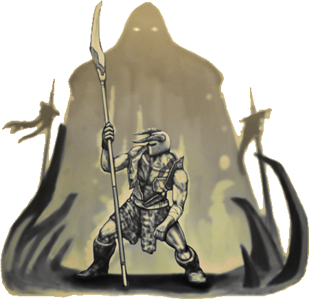

")


RuneScape Forums
Triumviratet
 Code of Conduct
Code of Conduct Sticky
Sticky
 Up to Nyheter & offentliggjøringer
Up to Nyheter & offentliggjøringer Refresh
Refresh
 Mod Sommerz
Mod Sommerz
Jagex Mod
|
19-May-2010 17:20:19
Last edited on 07-Jun-2010 20:39:17 by Mod Sommerz Triumviratet -Sun Tzu, Kunsten å krige  Personlige idealer er med på å forme alle avgjørelser vi tar. Den som tror på at det å stille opp for andre er riktig, vil ta helt andre avgjørelser enn den som føler at å unngå konflikter er veien fremover. Noen ganger kan vi finne andre med lignende idealer, og slik knyttes det bånd mellom oss. Det er gjennom disse grupperingene at tre fraksjoner har oppstått, alle med ett mål i sikte: å vinne dominans over de andre to. Blir du medlem av Ordensherrene, Dommerne eller Berserkerne? Hver organisasjon er basert på en filosofi og tankesett som gjør at du skal kunne finne den som passer deg! Du kan tjene opp innflytelse for din organisasjon gjennom ulike oppgaver og utfordringer, i tillegg til å rekruttere andre til din sak. Til og med hele klaner er velkommen til å melde seg inn i en av de tre organisasjonene og gjøre den sterkere. Tiden har kommet for å melde seg inn i Triumviratet! ► Når du har funnet ut hvilken fraksjon du ønsker å støtte, post på en av de tre "Join here"-trådene på Triumviratforumet. Slik fungerer det Denne oversettelsen er utført av Farmy Fear. En stor takk til deg fra det norske RuneScape-nettsamfunnet for den formidable innsatsen! ")  Som medlem av en av disse organisasjonene kan du bidra til å øke innflytelse og makt i organisasjonen, samt øke din egen rang i det. Innflytelse fungerer på et punkt å få system, der organisasjonen med mest poeng blir regnet som den mektigste og innflytelsesrike. Det er flere måter å få innflytelse: Konkurranser / Utfordringer Du kan tjene innflytelse for organisasjonen ved å få seier med i spillet utfordringer og hendelser, så vel som med visse vinne konkurranser. Army Hver klan som går under banneret av en av organisasjonene vil øke størrelsen organisasjonens militære innflytelse. Ulike størrelser på poeng vil bli tildelt avhengig av størrelsen på klanen. Enhver klan, sammenslutning eller virksomhet er velkommen til å bli med i hæren i en organisasjon. Enkeltpersoner Hver enkelt bruker som melder seg til en organisasjon Vil bidra til klanens innflytelse. Enkeltpersoner og Forsvaret er separate så ikke alle i en klan trenger å registrere deg til en bestemt organisasjon om deres klan bli med, og de velger å ikke. Spesielle Dette er spesielle punkter som kan gis på innfall av en J Mod hvis de føler at du har gjort en bemerkelsesverdig samfunn bidrag. Disse punktene vil alle legge opp for å vise den totale innflytelse i organisasjonen og det er fotfeste over RuneScape. I tillegg til å kunne tjene poeng for din organisasjon vil du være kvalifisert til å delta i spesielle arrangementer og samfunnet aktiviteter. Hver organisasjon vil ha en gruppe J Mods fungerte som den samlede figurens hode. Men spillere som rangerer høyt i organisasjonen Vil kunne lage utrodringer selv, Hjelp til å drive arrangementer og ta del i diplomati. Men bare J Mods kunne tildele påvirke eller løse regelbrudd og uenigheter. LORDS Lords er forkjempere orden og kontroll. Lords består av mange forskjellige typer personligheter, alle forent sammen for å gjøre sin plikt. Det er Riddere av ære, enkeltpersoner som kjemper i sin tro på, for å gjøre Det som er rett. Det er også tyrannene, ved hjelp av regler og lover holder seg på toppen og andre under dem. Symbolikken er svært viktig for Lords og så sine antrekk og hjem ofte reflekterer deres rikdom og prestasjoner. Det er sjelden å se en dårlig kledd Lord, men selvsagt også Lords vet at skjønnhet er i øyet som ser. Lords tror ikke på kompromiss, å gjøre det ville være å vike for kreftene til Judges og Reavers. De anser seg selv å bli som stein, uforanderlig og uknuselig. Orden kan ikke bli undergravd, og slik Lords må alltid arbeide for å sikre at deres visjon eller synspunkt er den som vinner enhver konflikt Lords følger alltid reglene av landet og mange av dem vil verne om disse reglene. Ridderne av orden kjemper for å stoppe dem som utfordrer loven, mens Lords søker makt arbeid for å bruke lovene til sine egne formål. Detaljer Filosofi: Orden Fokus: forpliktelse, tradisjon, kontroll Farger: Blå og sølv Element: Stein The Royalty: Mod Calm, Mod Craddock, Mod Mark H, Mod Howes Prinsippene Sikre din dominans Som Lord må du være mønster i orden. Dette kan bare oppnås ved å sørge for at både deg selv og resten av Lords er på topp i alle ting. Opprettholde din ære Du kan ikke spre ordet om pålegg dersom du selv ikke reflekterer et ærefullt bilde. Vedlikeholde din æreskodeks, og flere vil bli med under banneret. Spre ordet Nye adelige er alltid velkommen inn i familien av Lords. Arbeidet med å få flere under banneret vårt. Hvorfor skal jeg bli en Lord? Bli en Lord hvis du anser deg selv ærefull eller liker å arbeide innenfor regler og orden. Bli med Lords hvis du vil spille en god eller heroisk karakter eller hvis du anser som personlig gevinst å være av stor betydning. JUDGES Judges er voktere av balansen i verden. De tar sikte på å holde den naturlige orden på alt i sjakk og hindre noen fra å forstyrre den fine balansen i det de refererer til som "godt" og "ondt". Judges liker å veie opp godt mot ondt i enhver situasjon og gjøre sine avgjørelser deretter. De ser sin orden som en flytende organisasjon, som en elv som former seg etter konturene av landskapet. De tar aldrig avgjørelser uten å tenke gjennom ting. Judges fokuserer på å leve et liv med behov, ikke komfort. De foretrekker å bruke verktøy som omgivelsene gir dem. De er ikke rask til å hoppe på toget av ny taktikk eller teknologi, men på samme måte er de ikke helt imot å omfavne noe nytt når den er vurdert. Mens de kan representere, og opprettholde balansen i naturen dommerne er ingen "push overs". De kan være voldsomme krigere, og nådeløse forretningsmenn om nødvendig. Deres flytende natur betyr at de bør aldri undervurderes. Detaljer Filosofi: Balanse Fokus: Nøytralitet, forsiktighet, klokskap Farger: Hvit og Grønn Element: Vann Det høye råd: Mod french, Mod Markg, Mod Hohbein, Mod Jon H, Mod Kathy, Mod Murray Prinsippene Bevar Balanse Judges skal reflektere måtehold og ro på alle anledninger.La overilt tenkning til andre. Balanse krever respekt Judges bør være nøytral ved å unngå å bli trukket inn i noen negative konflikt der det er mulig. Noen ganger kan en konfrontasjon være uunngåelig, men det betyr ikke at en dommer har å miste sin rolige natur. Judges bør ikke være alene Judges skal fungere med hverandre, hjelpe ut der det er behov. Judges bør alltid søke å spre sannheten i balanse til andre. Hvorfor skal jeg bli med i Judges? Bli en Judge hvis du anser deg selv som en som kan holde seg kjølig i alle situasjoner og er ikke blåst opp av nye ting, eller holdt tilbake av tradisjon. Judges kan passe for deg hvis du har lyst til å spille en nøytral eller likegyldig karakter. REAVERS Reavers er opprørere med et formål, for individene som liker å kaste seg på livet. De representerer en kaotisk tilnærming, nyter stadige endringene i verden og ødeleggelsen av ting som ikke lenger tjener en hensikt. Reavers verdien på et liv i transitt, holder seg aldrig til samme rutine noe lenge. De sammenligner seg selv som rasende ild, stadig skiftende og forbruker. Selv om de verdsetter kaos og uenighet Reavers er ikke dumme og vet at de ikke kan trosse lovene av virkeligheten. Selv om de ønsker å spre ødeleggelsen de fortsatt har en sterk følelse av selvoppholdelse! Mens noen vurderer Reavers for å være noe annet enn villmenn de er faktisk en tett sammensveiset gruppe av sterk vilje og fantasifulle individer. Alle Reavers anses like verdifull som alle andre. Detaljer Filosofi: Kaos Fokus: Mayhem, forandring, heftighet Farger: Svart og Rød Element: ild The Fallen: Mod Crow, Mod Timbo, Mod Mat K, Mod SteveW, Mod Poppy, Mod Paul M Prinsippene Endre er bra En Reavers liv bør aldri være statiske. Alle Reavers skulle prøve og gjøre noe nytt så ofte som mulig og å hjelpe andre å lære hva de kan gjøre for å bli ... annerledes. Forsiktighet er overlevelse Mens Reavers strever for kaos og til å leve et heftig liv må de ikke prøve og bryte fundamentale lovene i landet (Reglene til Jagex). Det er ingen jeg i Reaver Arbeid sammen med andre Reaver og arbeidet med å få flere i folden. Ingen Reaver bør plassere sin egenunderholdning og verdi over deres egen sort. Hvorfor skal jeg bli en Reaver? Bli en Reaver hvis du liker konstant forandring som å spille det 'onde' eller en 'anti-helt rolle, ønsker å fokusere på arbeid i grupper i stedet for individuelt arbeid, som å hindre at ting er statisk, og hvis du har lyst på deg selv som å ha en brennende personlighet. Nå har vi forhåpentligvis gjort det grunnleggende av organisasjonene klare til deg, så nå skal vi videre på hvordan du kan forbedre organisasjoner innflytelse. Hver klan har en løpende totalt innflytelse som viser sin makt i forhold til kraften i deres motstandere. Det totale innflytelse resultatet er bygget opp av poeng opptjent fra antall medlemmer, antall klaner og størrelsen på disse klaner, utfordringer og konkurranse poeng og selvfølgelig spesielle punkter. Enkeltpersoner og grupper Den enkleste måten for en organisasjon å få innflytelse er rett og slett ved å rekruttere nye medlemmer. Det er to måter å gjøre dette: Enkeltpersoner For hver enkelt person som blir med en organisasjon som organisasjon får 1 poeng for påvirkning. Klaner / Sammensluttninger / virksomheter Også kjent som «Army», klaner og stor aktør grupper kan melde seg til å være tilsluttet en organisasjon og få innflytelse bare fra størrelse og utfordringer de overvinnes. En klan trenger ikke å opprettholde et visst antall mennesker for å holde det er poeng. Når du har oppnådd et av milepælene (milestones) nedenfor,har du tjent in innfytelse permanent for organisasjonen. Den minste størrelsen på en gruppe / klan må være 10 personer. En klan av 10-39 får 1 poeng av hæren innflytelse. En klan av 40-99 personer får 2 poeng En klan av 100-149 personer får 4 poeng En klan av 150-199 mennesker får 6 poeng En klan av 200-299 mennesker får 8 poeng En klan på 300 + personer får 10 poeng Medlemmene av denne klanen trenger ikke å være tilknyttet organisasjonen for at klanen kan bli med. Hæren og individuell innflytelse gir separate resultater. Et medlem av klanen kan melde seg igjen som en individuell av denne klanen eller registrere deg til en annen klan. Utfordringer og konkurranser Den neste måten å få innflytelse for organisasjonen er gjennom å ta del i utfordringer eller konkurranser. Grunnleggende Utfordringer Enhver tjenestemann fra en organisasjon kan innlede en utfordring med en annen organisasjon. Disse utfordringene kan være ganske mye alt, fra en in-game/forum debatt gjennom til en "All Out" PvP krig. Utfordringer vil bli lagt ut av en tjenestemann på utfordringer tråd for en J Mod til vurdering. Når den er godkjent kan vinneren av en utfordring tjene en avtalt innflytelse beløp. Mindre utfordring seier = 10 poeng Middels utfordring seier = 30 poeng Stor utfordring seier = 50 poeng Epic utfordring seier = 100 poeng J-Mod som godkjenner utfordringen vil anngi belønnings beløp. Offisiell Utfordring / konkurranse Disse er hendelser laget av et medlem av Jagex ansatte. De tilbyr høy innflytelse belønninger og er en super måte å bli lagt merke til i organisasjonen. Mengden innflytelse du kan tjene er helt avhengig av størrelsen på arrangementet, men det er alltid verdt å gi det en sjanse hvis du kan! Spesiell innflytelse Den endelige måten å få innflytelse for organisasjonen er via "Special"-metoden. Spesielle poeng er gitt for når en J Mod knyttet til organisasjonene flekker noe av deg de føler fortjener ekstra ros. Dette kan være alt fra en vel gjennomtenkt forslag, episke tråden idé eller noe sånt som en YouTube-video som sendes inn til RuneScape Channel. AJ Mod kan bare gi 1 poeng for en spesiell belønning, men å opptjene vil en får du masse ros og merke innen din valgte organisasjon. Forbedre rangeringen din Å forbedre den samlede påvirkning av organisasjonen er det viktigste målet med denne pågående konflikten, det er også mulighet til å øke din egen personlige innflytelse av stigende gjennom gradene i organisasjonen. Hver organisasjon er styrt av en rekke Jagex moderatorer, men de vil i hovedsak fungere som rådgivere for organisasjonen. Det er spillerens funksjonærer og rangert enkeltpersoner som vil komme til å starte utfordringer, legge til rette for diplomatiske forhandlinger eller organisere spesielle begivenheter / rekruttering stasjoner. Hver organisasjon vil ha sin egen spesielle rangert posisjoner, men det er noen satt nivåer, som er universelle for hver gruppe. Initate Hver enkelt person som tegn på en organisasjon er klassifisert som en gang. De er ryggraden i organisasjonen. Adept Adepts er spillere som har tjent varsel innenfor klanen, enten gjennom å fullføre en utfordring eller blir tildelt en spesiell innflytelse punkt. Tjene et enkelt punkt er nok til å bli en mester (Bare registrerte deg teller ikke som et punkt). Champions Dette er individer som har tjent nok utfordring eller spesielle punkter for å kunne innlede utfordringer av sine egne. Antall poeng som kreves kan variere, vil Jagex Mod's ansvaret for organisasjonen staten hvor mange poeng nå påkrevd. Minister Dette er et spesielt valgt posisjon. Ministeren fungerer som talsperson for organisasjonen og kan løse konflikter, innlede diplomatiske forhandlinger og sette sine egne utfordringer. De må svare til både Champions og Jagex Mods ansvaret. Ministrene vil bli valgt fra listen over Champions når en J Mod åpner opp de stemmeberettigede prosessen. I tillegg til å rangere enkeltpersoner vil det også være mulig for Klaner og grupper for å få posisjoner anerkjennelse. Som individer høy rangering klaner vil være i stand til å initiere egne utfordringer for å få innflytelse for deres organisasjon. Som med individuelle rekker, kan hver enkelt organisasjon velge sin egen spesialist rekker, men her er noen universelle grader: Militia Dette er den grunnleggende klanens rang. Infantry Enhver gruppe som tjener 1 poeng for påvirkning vil bli medlem av infanteri. Battalion Når en gruppe har oppnådd en bestemt mengde innflytelse poeng (Som det fremgår av deres organisasjon) vil de bli en bataljon. Bataljoner er i stand til å initiere egne utfordringer med andre organisasjoner, samt representere deres organisasjon i viktige hendelser. Elite Task Force Uansett hvilken gruppe er for tiden å få den mest utfordringen innflytelse for deres organisasjon har den ære å bli omtalt som at klaner Elite Task Force. De har den samme evnen som en bataljon, men påvirkning fra denne utfordringer involvere dem (eller mot dem) vil bli høyere. Skulle en gruppe være i stand til å holde på tittelen i minst en måned vil de bli bokført i Hall Of Fame. Hvis de er i stand til å holde på tittelen i tre måneder da de vil få en unik tittel som ikke kan bli tatt fra dem i fremtiden. De fleste handlinger du utfører for en organisasjon skal få deg påvirke og bidra til å øke din rangering, men det er ikke umulig for en spiller å bli degradert eller innflytelse til å bli fjernet på grunn av sine handlinger. Hvordan innflytelse kan gå tapt Forlate en organisasjon Du er velkommen til å forlate en organisasjon når som helst,om detskal være for å forfølge egne mål eller til og med å slå seg sammen med en annen organisasjon. Siden organisasjonen vil være nede et medlem vil de også miste et poeng av innflytelse. Innflytelse tjent som følge av utfordringer, konkurranser eller spesielle belønninger vil bo med organisasjonen du ga dem for. Hvis du bytter organisasjoner vil du ikke kunne bytte dem over. Hvis du er rangert i en organisasjon, og velger forlateden, må du starte som en Initate hvis du kommer tilbake senere, eller hvis du blir med en ny organisasjon. Utfordringer Enkelte utfordringer kan spilles for større innsatser. Som et resultat av dette vil taper teamet kunne miste innflytelse (Tenk på det som å være på en PvP verden). Disse hendelsene er sannsynligvis ganske sjeldne, men skulle vise seg verd risikoen i form av gevinst. Alvorlige regelbrudd Når du blir med i en organisasjon blir du en representant for det. Publisering av store mengder spam, støtende språk eller alvorlige fornærmelse kan resultere i at innflytelse er blitt tatt bort. Hvis du er rangert i organisasjonen dette kan resultere i at du slippe under den nødvendige punktene terskelen og derfor ville bli degradert. For initierer, hvis du mister innflytelse to ganger (Fra regelen brytes), vil du dessverre bli fjernet fra organisasjonen og vil ikke være i stand til å registrere seg til andre organisasjoner eller delta i fremtidige hendelser. Aktiv tross Du kan miste innflytelse ved aktivt å undergrave resten av organisasjonen når det gjelder beslutningsprosesser. Hva dette egentlig betyr er at hvis du blir fortalt å ikke gjøre noe av din organisasjon (Dvs. hold av utfordringer for en dag), men gå videre og gjøre det ut av tross du ville miste innflytelse og ire av dine medmennesker. Ikke bekymre deg for dette skjer ved et uhell selv, dette vil bare gjelde for personer aktivt forårsaker problemet Ettersom disse organisasjonene er svært samfunn fokusert en journal vil bli holdt på hvorfor innflytelse har gått tapt. Som sådan andre vil vite om du har mistet dem poeng, og kan ikke se vennlig på deg (Dette gjelder kun for poeng tapt gjennom regelen bryte eller trass). På en annen side, hvis du får poeng du prestasjoner bli gjenkjent og dine venner kan se på deg med ærefrykt! Spørsmål og svar Q:= Spørsmål A:= Svar Q:Er dette et nytt tillegg til RuneScape lore? A:Nei, dette spillet atskilt fra kunnskapen og oppdrag av RuneScape. Det er en sammfunns aktivitet i stedet for spill innhold. Q:Må jeg forlate min egen klan til å delta? A:Nope! Faktisk ville det være kjempe fint hvis klanen kunne registrere deg for å bli en av organisasjonene, og få 'hær innflytelse'! Q:Hva skjer hvis klanen registrerer seg, men en i gruppen slutter deg til en annen organisasjon? A:Enkeltpersoner bidrar annerledes en klaner, å være i ulike organisasjoner gir ikke din clan noen konflikt så det burde ikke være noe problem. Q:Kan en sammensluttning bli med i en organisasjon? A:Selvfølgelig! Jo flere jo bedre! Hvis du er en stor bedrift vil du også hjelpe legge ganske mye innflytelse til at organisasjonens hær! Q:Klanen min er en skilling klan, vi ønsker ikke å kjempe i en hær A:Ikke bekymre deg. Å være i hæren vil ikke tvinge deg til å bekjempe noen. Det er bare en måte å inkludere klaner samt enkeltpersoner i å få innflytelse. Q:Jeg ønsker å bytte til en annen organisasjon, kan jeg gjøre det? A:Ja men du må gi beskjed via "Leaving Thread", slik at du kan bli flyttet til den andre organisasjonen. Jeg er redd for at noen poeng du har tjent, mens det i at organisasjonen skal bo hos dem selv. Q:Hvilke organisasjons rang er tilgjengelige? A: Det avhenger av organisasjonen selv, men de grunnleggende gradene er 'Initate, 'Adept', 'Champion "og" Minister ". Q:Jeg vil lage en utfordring, hvordan gjør jeg det? A:Først må du ha en høy nok rang til å utfordre andre. Når du er rangert som en Champion eller høyere bare ta utfordringen til "Challenge" tråden og venter på enten et Mod eller rangeres offisielle fra organisasjonen for å bekrefte det. Vær oppmerksom på at J Mods vil sette påvirkning belønninger. Q:Reavers lyder kule, har vi lov til å bryte reglene? A:Nei! Mens Reavers representerer kaos og uorden er de fremdeles bundet av reglene i spillet og i forumet. Du trenger ikke å være et troll å være en god Reaver! Q:Hvis jeg blir med i Lords betyr det at jeg kan bli en moderator? A:Beklager men nei. Delta i en organisasjon vil ikke påvirke dine sjanser til å bli moderator, det er bare en morsom måte å møte likesinnede mennesker og engasjere seg i en flekk av verdensherredømme. Q:Hva betyr de Understrekede Mod navnene? A:Mods som har understreket navn anses som forsamlingshodene. De bestemmer ikke over forsamlingen, langt i fra, men de fungerer som hoved talsmann for organisasjonen. |
|
Vanitas Soul
|
19-May-2010 19:11:21
Jeg har et spørsmål, hvordan joiner jeg :S?
|
|
Farmy Fear
|
19-May-2010 20:02:17
Lords!
Håper flere norske vil komme til lords å gjøre oss sterkere
|
|
Mod Sommerz
Jagex Mod
|
19-May-2010 20:29:25
Last edited on 19-May-2010 20:35:18 by Mod Sommerz
Hei Poetics Fury!
Du finner alt du trenger å vite på denne tråden - så det er bare å lage seg en kopp kakao og begynne å lese: 236-237-0-60990014 Kanskje noen som allerede har kastet seg med kan komme med noen nybegynnertips her? Det har også blitt startet en norsk diskusjonstråd om Triumvirate, QFC: 145-146-643-60999108 Mod Sommerz Facebook - Twitter RuneFest 2010 |
|
Xam Firemanx
|
20-May-2010 18:44:27
Jeg er helt med på dette!
~Lord Xam |
|
Silenio

|
29-May-2010 09:24:44
Sommerz
Jeg syntes at selv med den oprinnelige siden til triumvirate, var det "litt" vanskelig og finne ut hvor du regirstrerer deg. Så bare for og renske opp litt: Først så går du på det engelske forumet, så blar du deg ned til kategorien Events And Services. Så velger du "triumvirate." Der inne er det mange Sticky's. For og joine en organisasjon, må du velge: Join the Lords here Join the Judges here Eller, Join the Reavers here. Så følger du eksemplene til alle som har postet før deg. Man kan også melde på en clan under "Clans/groups Signup". |
|
Mod Sommerz
Jagex Mod
|
29-May-2010 13:58:16
Hei Saxaca!
Takk for oppklaringen, jeg ser nå at dette ikke sto tydelig forklart på tråden det blir lenket til. Har oppdatert førsteinnlegget. Mod Sommerz Facebook - Twitter RuneFest 2010 |
|
Mod Sommerz
Jagex Mod
|
04-Jun-2010 12:56:54
Last edited on 04-Jun-2010 12:57:21 by Mod Sommerz
Hei folkens!
Lørdag og søndag denne helgen er det klart for hele 27 Castle Wars-kriger i Triumviratet, så nå er det er all mulig grunn til å bli med i en av de tre fraksjonene og kjempe for dens ære og innflytelse! Les alt om dette her. Lykke til! Mod Sommerz Facebook - Twitter RuneFest 2010 |
|
Farmy Fear
|
06-Jun-2010 14:04:25
Hei hei mod sommerz, nå har jeg oversatt hele Triumvirate guiden, postet den på det norske general forumet, skal den være der eller vil du ha den et annet sted?
jeg er ikke sikker på om den allerede er blitt oversatt men det tok lang tid
|
|
Danpwner
|
01-Jul-2010 21:47:22
Current Challenges
Official! Clan Wars Challenge! Vi skal holde en rekke Clan Wars kamper mellom de ulike fraksjonene denne lørdagen, med nok av tid til å skaffe din side poeng og innflytelse! Kampene vil bli holdt i World 94, til følgende tider: Lørdag 3. Juli 01:00 Norsk tid - Judges vs Lords 12:00 Norsk tid - Lords vs Reavers 22:00 Norsk tid - Reavers vs Judges Ulikt andre Clan Wars kamper, disse kampene er ikke avgjort etter en runde. Man har en hel time på seg til å skaffe flest mulig seire. Hurtige taktikker og gode strategier kan nok vinne deg mer poeng enn hvis du stormer inn uten noen form for strategi. For hver seier vil fraksjonen blir belønnet med 100 influence. Hvis dere er flinke, betyr dette at din fraksjon kan komme seg unna med en oppsiktsvekkende sum når det hele er over. Ikke glem å vise din fraksjon sine farger! Dere bør bruke Wilderness Team Capes (Tilgjengelig fra Cape Sellers rundt i Wilderness og i Grand Exchange.) Vi anbefaler følgende: Lords: Team Cape 21 Judges: Team Cape 31 Reavers: Team Cape 41 Møt opp og støtt din side, håper dette blir en av de mer episke kampene vi har sett. Reaver, Danpwner |
Quick find code: 212-213-13-60999138